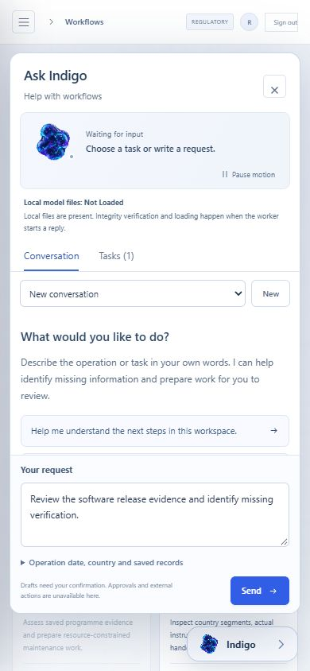
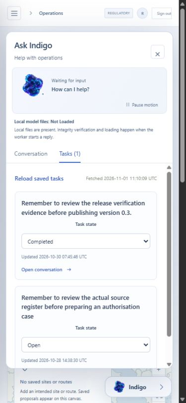
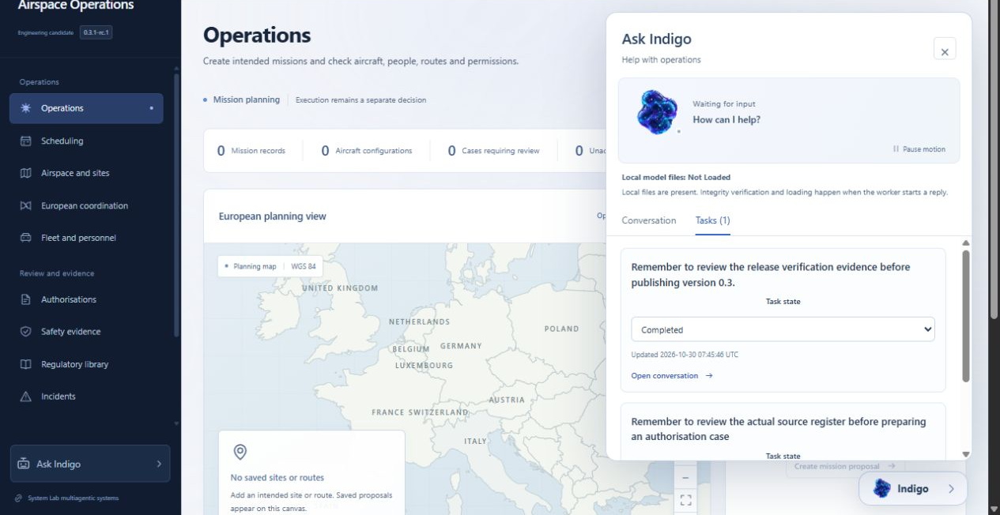
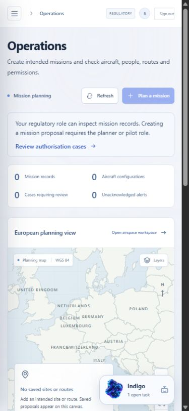

Recorded software evidence
System Lab
Airspace Evaluation
This page makes recorded software and model evidence available for inspection. It does not run a model, connect to an operator workspace or approve a flight.
Published 0.3.4 candidate
Version 0.3.4-rc.1 is a published engineering candidate from frozen source f5dd93a7c5c7367101ea63147a5da99cb085addb. Its 15,377,087-byte ZIP has SHA-256 c34bca925553743ef6ce310c909b370a2662e5d5cd098f222d9a5ea6d28a7e57. All nine actual release assets were anonymously retrieved and matched their published digests.
Download 0.3.4-rc.1 ZIP Release notes and verification assets
The companion keeps an unsent request with the signed-in user after workspace navigation and reload. Changing the user, organisation, token or role resets its transient view. Draft storage and callback scope checks reject stale updates, including an A to B to A transition; an abandoned concurrent render does not disable the committed user's draft. The normal sign-out path already unmounts the companion. These are software boundary checks, not evidence of a production privacy incident.
The administrative python -m airspace.cli check command reports Windows long-path configuration as enabled, disabled or unknown, and calculates representative path lengths in UTF-16 code units. It does not create or migrate a database, create an audit key, change Windows settings or test storage writes. Its schema version identifies supported software, with the existing database explicitly Not Inspected. A setting or short example path does not establish usable storage. Earlier failed Windows attempts and their repair evidence remain recorded.
The frozen Linux source suite passed 576 tests with 20 skipped and 9 warnings. The interface suite passed 180 tests. The exact archive installation separately passed 576 tests with 20 skipped and 3 warnings in 64.01 seconds. CI 41408782094 records current container, PostgreSQL, worker and restoration checks. These application results do not measure student quality or establish aviation certification, complete European coverage or operational acceptance.
The actual isolated browser review restored a real unsent software-review request through navigation and reload, and read two existing personal engineering tasks. No Send control was activated; no task or operational record was created and no model worker ran. Four distinct recorded frames demonstrated normal companion motion. Pause and resume controls were observed; capture-tool failures prevented a paused-pixel stability check. Actor changes and reduced motion have separate component-test evidence and are not presented as a two-account browser test.
The existing experimental literal-language student remains unchanged and unpromoted. Original weights, training records, dataset rows, machine labels, splits, rights notices and measured model results are unchanged. No new model generation, training, annotation or benchmark result accompanies this presentation update. The static Space is recorded evidence, performs no live inference and cannot access an authenticated operator workspace or approve an operation.

Published 0.3.3 candidate
Version 0.3.3-rc.1 is a published engineering candidate from source 6f8364df25b942d49eb1b4ccaa40f27f70578dbb. Its 14,192,874-byte ZIP has SHA-256 067c1b940d520177695402cd469823e35183e4a96d0bbc7af403fd9effb0d6f5. All nine public assets were anonymously retrieved and matched their published digests.
Download 0.3.3-rc.1 ZIP Release notes and verification assets Frozen source
A failed saved-task fetch now shows an unavailable state and a direct retry. One manual retry reloads only the task list; it does not resend a conversation, create a task, execute an action or call a model. Previous-account results and fetch timestamps are hidden as soon as request identity changes. The current server still enforces actor ownership, permissions and task versions.
The actual source suite passed 544 tests with 20 skipped; the interface suite passed 160 tests with 0 skipped. The exact archive suite separately passed 544 tests with 20 skipped. CI 41301492234 identifies the successful engineering dependency job. The isolated browser review changed the first actual successful task read to a 503 and recovered the real response through one manual GET. It preserved the unsent draft, two existing personal engineering tasks and all existing records. These are software checks, not operational acceptance or aviation certification.
The historical experimental student remains unchanged and unpromoted. No model generation, training run, new dataset rows or model-performance improvement accompanies this presentation update. The static Space performs no live inference, operational action or authenticated workspace access. Earlier releases and media remain available unchanged.

Published 0.3.2 candidate
0.3.2-rc.1 is a published engineering candidate. Its 13,796,258-byte archive and all eight accompanying assets were anonymously retrieved and their published digests matched. ZIP SHA-256: 1634b9b7e36bd2b80b179a4e0429da7f0c9165434747fc9a62f03ede78cc772e. Inspect frozen source 2ebb8b20e515d9863a69b072bd963890e219e050.
Download the 0.3.2-rc.1 ZIP Release notes and verification assets
The Operations workspace explains who can prepare mission proposals and opens the existing authorisation-case workspace. A regulatory role can inspect mission records; a planner or pilot role is required for proposal creation. The server still checks permissions. Publication-media checks now inspect filename and encoding with bounded traversal.
The candidate pins the upstream PDF parser to 6.21.4 for GHSA-5849-834g-hvw5, GHSA-mfr5-77xh-9j7h, GHSA-cggf-277g-3q54. Read the upstream fixed release. The initial failed audit is preserved. Corrected local selected dependency scans found no known findings; this is not a vulnerability-free claim. Frozen 0.3.1 retains the affected 6.21.3 pin and an existing installation is not updated by publication.
Actual source and exact-archive suites each passed 542 tests with 20 skipped. The interface suite passed 132 tests. Nineteen PostgreSQL checks, containers, worker/API completion and backup/restoration passed in run 41275818880. The exact archive test suite completed in 67.80 seconds. No new training, model generation or operational record was created. Software verification does not establish aviation certification or operational acceptance.


The student and dataset are unchanged. This static page runs no model and exposes no operational controls. The owned companion animates in the installed application; these recorded screenshots are fixed evidence. Saved pause and reduced-motion preferences retain precedence.
Historical published 0.3.1 candidate
0.3.1-rc.1 is a historical published engineering candidate. The exact 12,504,321-byte archive passed a separate clean installation with 479 software tests passed and 20 skipped. All 19 PostgreSQL checks, actual containers, a running worker and backup/restoration checks passed in run 41118769822. The interface suite passed 123 tests. All nine release assets were anonymously retrieved and matched their published digests. These checks do not establish operational acceptance.
Historical 0.3.1-rc.1 ZIP Release notes and verification assets
ZIP SHA-256: 0917f468624e35c64829f1591d389fadf51f4528f027d7dc614f1c3fb2b7b750.
Inspect the exact frozen source and evidence. The screenshot capture requested no new model generation; it is not a training example.
The installed product keeps conversations and personal tasks, previews internal drafts for confirmation, and shows queued work separately from a running reply. Missing models and exhausted budgets remain visible. The operational workspaces work without generation.
The existing System Lab presentation runtime animates the owned companion, with an animated fallback and pause and reduced-motion controls. The application uses the shared in-house agent core through aviation-specific tools and permission gates. Existing presentation assets retain reserved rights. Read about the technology programme.
Recorded application work
The earlier 0.2 application ran a local Qwen controller with retrieval and deterministic tools. Its records identify model inputs, source passages, tool results and the review checkpoint. They are historical software tests, not flown missions or evidence that a language model can approve an operation.
- Read the recorded UI and worker workflow
- Read the small controller comparison
- Read the container and database verification
The two-query comparison does not establish legal-answer quality or a speed advantage. Its timings are affected by run order and cache reuse.
Experimental student
The unchanged student predicts literal English shall language. It achieved 81.82% agreement with 77 unreviewed machine labels; a deterministic literal-word check achieved 100%. It remains experimental and unpromoted.
Read the model card and actual model artifact
Inspect the actual source annotation dataset
The dataset contains 288 legal passages, 42 quarantined annotations and 246 accepted machine annotations. These labels are not qualified human review.
Use the application
The operational product is installed separately with authentication, a database and workers. It starts with an empty operational workspace. The local model requires explicitly installed files. The 9,833-passage EASA corpus is a partial, dated collection, not complete current European law. Luxembourg and Italy require qualified reconciliation; other country entries are not validated packs, and UK applicability stays separate. Permissions, data rights, approved procedures and operator acceptance remain necessary.